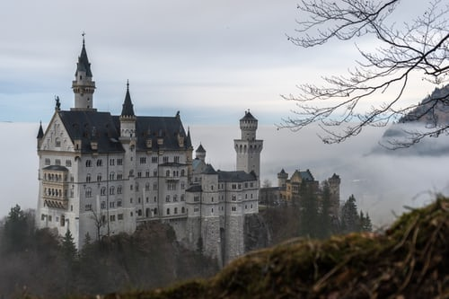
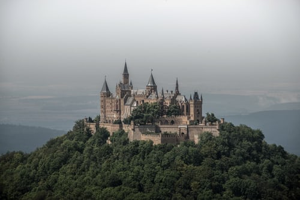
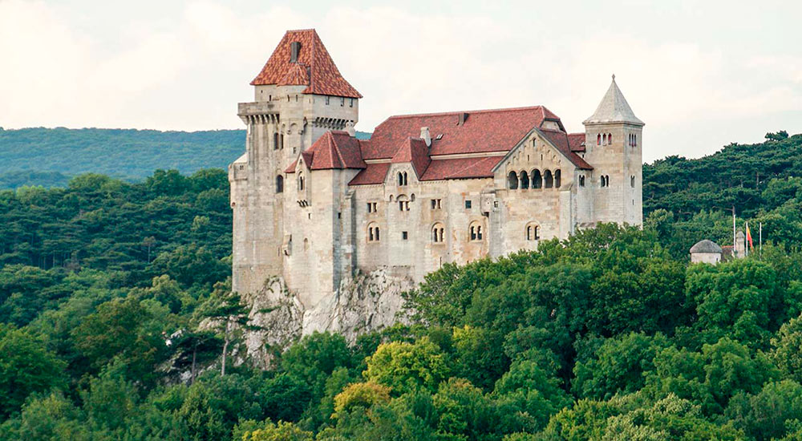
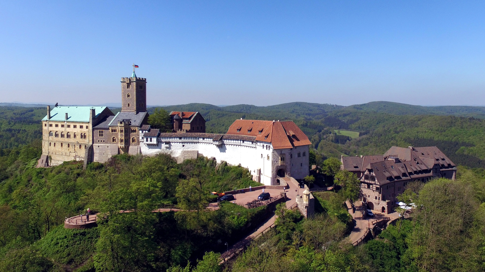

Самый известный и самый посещаемый замок мира. Был построен в 1869-1886 годах королем Баварии Людвигом II, получившим в народе прозвище "сказочный король" из-за красоты построенных им замков. Строительство было остановлено в 1886 году по причине ареста короля и объявления его душевнобольным.
Главная королевская резиденция Германии, расположен на вершине горы на высоте 855 метров. В экспозиции замка хранится много исторических артефактов.
Сказочный замок, расположенный на вершине скалы. Он принадлежит герцогам Урахским, но открыт для посетителей. Внутри большая коллекция исторического оружия и доспехо
Самый главный замок для Германии с точки зрения истории, он был основан в 1067 году. Здесь сохранились оригинальные жилые помещения, в которых жили знатные люди в XII-XIII веках.
